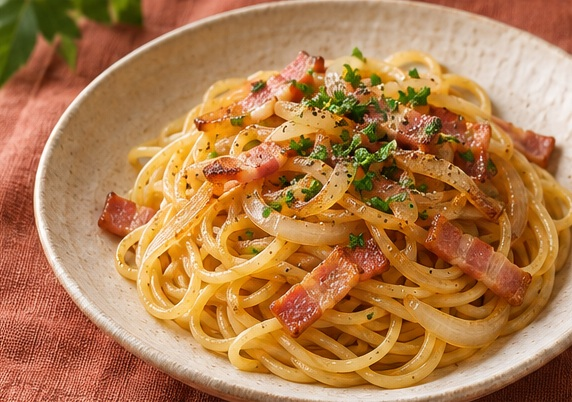

ミミシェフ

ベーコンと玉ねぎの
パスタ
材料
1人分
パスタ
100 g
ベーコン
40 g
玉ねぎ
1/4個
料理を始める
食材・道具を確認
調理ガイド
ミミシェフ
次にやること
茹で時間
パスタの茹で具合を確認してください。
ミミシェフの返答
会話を始める
停止
文字で入力
調理前に戻る
会話履歴
食材・道具
食材・1人分
パスタ
100 g
ベーコン
40 g
玉ねぎ
1/4個
オリーブオイル
小さじ2
塩・こしょう
適量
道具
鍋、フライパン、ざる、包丁、まな板
文字で入力
調理の報告や相談
送信する
調理を終了しますか？
会話履歴とタイマーがリセットされます。
調理を終了する
調理を続ける